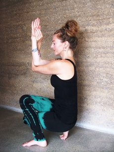

Welcome
Jaymin teaches hatha yoga, her teaching being grounded in the Shadow Yoga system.
Classes and workshops are currently run in Auckland City and surrounding areas with workshops in Northland and the Waikato.
Workshops are also offered throughout Aotearoa where expressions of interest are shown, please get in touch.